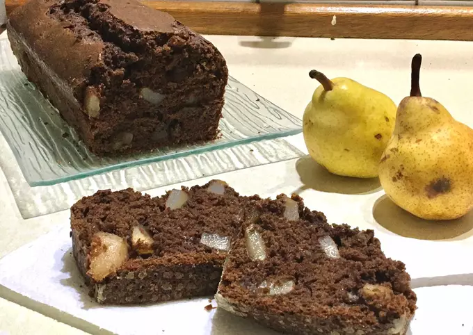
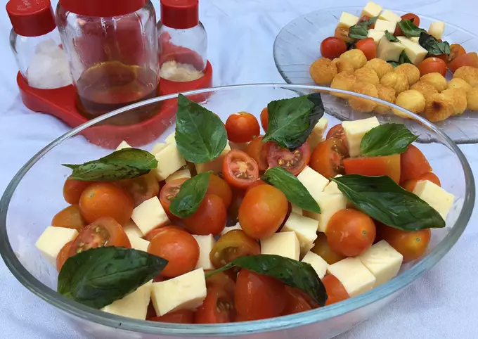
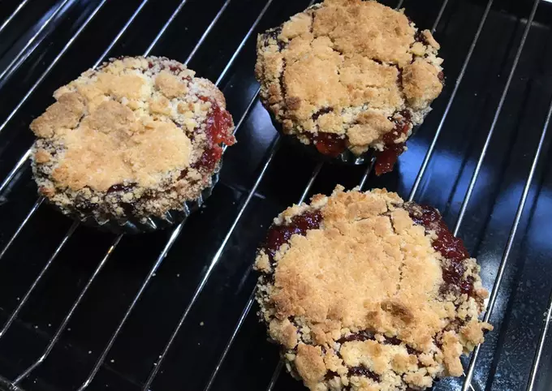
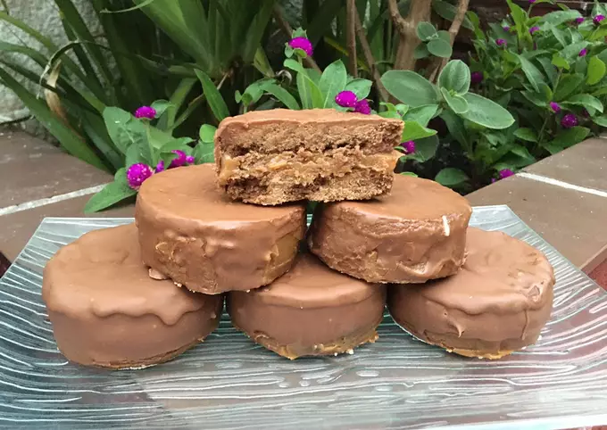
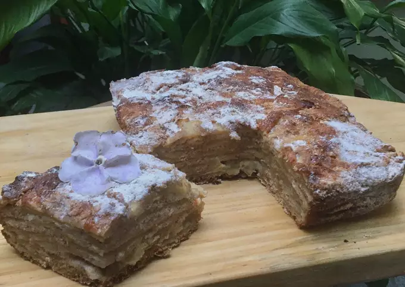

Últimas Recetas

Budín de chocolate y pera

Brigadeiros

Ensaladacaprese

Profiteroles rellenos de dulce de leche

Milanesa de carne picada

Budín de chocolate relleno de dulce de leche

Torta crumble de membrillo

Arenado para torta crumble

Alfajores de chocolate

Scones de queso

Galletas de avena

Torta alemana de manzanas